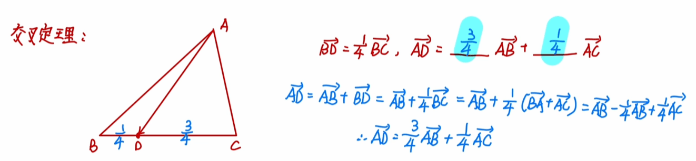

解三角形
基本方法
基本原理
回忆初中平几，根据全等三角形的判断：
如果知道 ASA、AAS、SAS、SSS、HL 就可以唯一的确定一个三角形。
总结一下就是两个角全都可以，三个边可以，一个角两个边就需要是夹角。
即知道 aCb、cBa、bAc，才可以唯一确定一个两边一角的三角形。
至于 SSA，只有一个角是直角才可以唯一确定，不过这个就是 HL 了。
三角形确定，意味着我们可以求出所有边的长度以及所有角度的大小。
正弦定理、余弦定理就为我们提供了方法：可以利用角度和边长互相表示。
像这样，确定三角形边、角的过程，就是解三角形。
如何选择正弦定理、余弦定理？
遇到正弦选正弦定理，遇到齐次式考虑正弦定理。
遇到余弦选余弦定理，遇到边的二次齐次式考虑余弦定理。
原则：边角统一。
三角函数
在三角形中，
A+B+C=π 因此就有：
sinAsinBsinC=sin(B+C)=sin(A+C)=sinA+B cosAcosBcosC=−cos(B+C)=−cos(A+C)=−cos(A+B) sin2Asin2Bsin2C=cos(2B+C)=cos(2A+C)=cos(2A+B) cos2Acos2Bcos2C=sin(2B+C)=sin(2A+C)=sin(2A+B) 在三角形中，a=bcosC+ccosB。
若 sin2A+sin2B=sin2C，则该三角形是以 ∠C 为直角的 Rt△。
解三角形里面常用的奇怪三角函数：
sin15∘=cos75∘=46−2sin75∘=cos15∘=46+2 特殊的，如果 sin2A=sin2B，则有 2A=2B 或 2A+2B=π，即 A=B 或 A+B=90∘，即等腰或直角三角形。
平面几何法
利用平面几何定理，直接解决。
通常平面几何关注的是角与边的关系。
角，联系三角函数，倒角解决。
边，通常联系正余弦定理，以及一些特殊的定理。
建系法：将数据用坐标表示，详见解析几何。
如果直角三角形三边成等差数列，则变长一定为 3,4,5。
向量基底法
用向量基底分解，利用点乘的性质解决。
通常情况下，向量法是一个好用而简洁的方法。
算两次原理：用同一组基底，用不同方式表示一个向量，则系数一定相等。
三角形应用
基线：在测量过程中，根据测量的需要而确定的线段叫做基线。
仰角：在同一铅垂平面内，视线在水平线上方时与水平线的夹角。
俯角：在同一铅垂平面内，视线在水平线下方时与水平线的夹角。
方向角：从正北或正南方向到目标方向所形成的小于九十度的角。
方位角：从某点的指北方向线起依顺时针方向到目标方向线之间的水平夹角。
三角法定理
正弦定理
回顾初中几何，三角形面积，
S=21absinC=21bcsinA=21acsinB 下面的证明过程只考虑锐角三角形，对于钝角三角形，结论不变。
做过 ∠A 的垂线，则该垂线长度 h：
h=bsinC=csinB 对每个角应用，最后可得，
sinAa=sinBb=sinCc=k 做出该三角形的外接圆，过圆心做 BC 的高，则，
a=2RsinA,sinAa=2R 即值 k 为三角形外接圆直径 2R。
常常这么写：
a=2RsinA,b=2RsinB,c=2RsinCsinA=2Ra,sinB=2Rb,sinC=2Rc 正弦定理推论：大边对大角，小边对小角。
余弦定理
在 △ABC 中，
AB=CB−CA∣AB∣2=∣CB∣2+∣CA∣2−2∣CB∣⋅∣CA∣⋅cosθc2=a2+b2−2abcosθ 其中 θ 为 c 的对角，即 ∠C；第二步就是两边平方。
常写作：
cosA=2bcb2+c2−a2,cosB=2aca2+c2−b2,cosC=2aba2+b2−c2 推论：
a2+b2−c2>0a2+b2−c2=0a2+b2−c2<0⟹cosC>0⟹C∈(0,π/2)⟹cosC=0⟹C=π/2⟹cosC<0⟹C∈(π/2,π) 余切定理
ζp=p1(p−a)(p−b)(p−c)=2a+b+c 其中 ζ 为 △ABC 内切圆半径，p 为三角形的半周长。
推论，一各三角形内切圆半径为，
R内=a+b+c2S 其中 S 表示三角形面积，a,b,c 分别表示三边长。
正切定理
正切定理指出，三角形中，两条边的和与差的比值，等于这两条边的对角的和与差的一半的正切的比值：
a+ba−b=tan2∠A+∠Btan2∠A−∠B 三角形四心
| 编号 | 心的名称 | 定义 |
|---|
| X1(I) | 内心 | 三条角平分线的交点 |
| X2(G) | 重心 | 三条中线的交点 |
| X3(O) | 外心 | 三条中垂线的交点 |
| X4(H) | 垂心 | 三条高线的交点 |
奔驰定理
在锐角 △ABC 中，
S△BOC⋅OA+S△AOC⋅OB+S△AOB⋅OC=0 推论：
设 I 为内心，则 a⋅IA+b⋅IB+c⋅IC=0.
设 H 为垂心，则 tanA⋅HA+tanB⋅HB+tanC⋅HC=0.
设 O 为外心，则 sin2A⋅OA+sin2B⋅OB+sin2C⋅OC=0.
欧拉线定理
欧拉定理：O,I 分别为外接圆、内切圆圆心，则有 OI2=R2−2Rr.
欧拉线定理：三角形的外心 O，垂心 H，重心 G 依次位于同一直线上，且重心到外心的距离是重心到垂心的距离的一半，即
$$ \overrightarrow{OG}=\frac{1}{3}\overrightarrow{OH}=\frac{1}{3}(\overrightarrow{OA}+\overrightarrow{OB}+\overrightarrow{OC}) $$
极化恒等式
一般形式：
已知平面上非零向量 a 与 b，则 a⋅b=41(∣a+b∣2−∣a−b∣2)。
在 △ABC 中，若 M 是 BC 的中点，则 AB⋅AC=∣AM∣2−41∣BC∣2。
在 △ABC 中，对于共起点的数量积 AB⋅AC的求解问题，我们首先想到的是找出 BC 的中点 M，则
AM=21(AB+AC) 所以
AB⋅AC=[21(AB+AC)]2−41∣BC∣2 化简整理便可得到如下结论：在 △ABC 中，
2AB⋅AC=∣AB∣2+∣AC∣2−∣BC∣2 任何事物都是由特殊再到一般，我们研究平面几何问题更多的是在研究三角形，因为三角形是我们接触最多也是最熟悉的，然后由三角形再延伸到四边形问题。那么对于向量余弦式是否也可以延伸到四边形呢？我们知道四边形通过对角线是可以分割成三角形的，下面一起来探讨这个问题。在平面四边形 ABCD 中，它可以由 △ABC 与 △ACD 组成，则在 △ABC 中，由向量余弦式可得
AB⋅AC=2∣AB∣2+∣AC∣2−∣BC∣2 那么在 △ACD 中，则向量余弦式可得
AD⋅AC=2∣AD∣2+∣AC∣2−∣DC∣2 两式相减可得
AD⋅AC−AB⋅AC=2∣AD∣2+∣AC∣2−∣DC∣2−2∣AB∣2+∣AC∣2−∣BC∣2 整理后可得
AC⋅BD=2∣AD∣2+∣BC∣2−∣AB∣2−∣CD∣2 这就得到了平面四边形的向量余弦式的形式。
在四边形 ABCD 中，
AC⋅BD=2∣AD∣2+∣BC∣2−∣AB∣2−∣CD∣2 这个结论也称之为对角线定理，它不仅仅可以在平面四边形中得到应用，还可以推广到空间四边形的情形。
分点的向量方程
特殊的，中点的向量方程：
AD=21AB+21AC 
即对边比例相乘向量相加。
重心及其性质
重心：三角形三边中线交点，在平面直角坐标系中，重心的坐标是顶点坐标的算术平均，也就是说对于平面内任意一点 P：
PG=31(PA+PB+PC) 重心和三角形任意两个顶点组成的三个三角形面积相等，而重心到三条边的距离与三条边的长成反比。
根据奔驰定理，有三角形重心到其各个顶点向量之和为零。
GA+GB+GC=0 特性：一个三角形的重心同时也是其中点三角形的重心，中位线证明。
根据是中线的性质，做 AG 并延长交 BC 于点 H，则：
GHAG=12 特殊的，重心到三边距离之积最大、到三角形三个顶点距离的平方和最小。
内心及其性质
内心为三角形内切圆圆心，因此为三个角的角平分线交点：
AI=λ(∣ABAB+∣AC∣AC) 有奔驰定理的形式：
sinA⋅IA+sinB⋅IB+sinC⋅IC=0 三角形的内心到边的距离（即内切圆的半径）与三边长及面积之间有关系：
r内=a+b+c2S=C2S 可以连接内心与三顶点，等面积法求解。
外心及其性质
外心为三角形外接圆圆心，因此为三边中垂线交点，不一定在三角形内部，到三角形三点距离相等。
OA2=OB2=OC2 有奔驰定理的形式：
sin2A⋅OA+sin2B⋅OB+sin2C⋅OC=0 而，
R外=4Sabc 当三角形为锐角三角形时，外心在三角形内部。
当三角形为钝角三角形时，外心在三角形外部。
当三角形为直角三角形时，外心在斜边的中点上。
锐角三角形外心到三边距离之和等于 R+r。
证明：等价于证
R(cosA+cosB+cosC)=R+r 我们知道
SΔABC=21(a+b+c)r=SΔOAB+SΔOAC+SΔOBC=21R(acosA+bcosB+ccosC) 联立上两式（相乘），直接展开易知等式成立。
垂心及其性质
垂心是三角形三边垂线的交点，因此有点积为零。
HA⋅BC=HB⋅AC=HC⋅AB=0 两两整理，得到：
HA⋅HB=HB⋅HC=HC⋅HA 有奔驰定理的形式：
tanA⋅HA+tanB⋅HB+tanC⋅HC=0 而垂心到三角形一顶点距离等于此三角形外心到此顶点对边距离的 2 倍。
三角形外心 O、重心 G、垂心 H 三点共线且 OG:GH=1:2 此直线称为三角形的欧拉线。
三角形三线
中线长定理
在 △ABC 中，BC 的中点为 M，对于中线 AM，有：
AM2=21b2+21c2−41a2 或，
AM2+BM2=21(AC2+AB2) 或，
AM=212b2+2c2−a2 证明，基底分解：
AM=21AB+21ACBM=21AC−21AB 则，
∣AM∣2+∣BM∣2=21∣AB∣2+21∣AC∣2 或者中点两个底角分别列余弦定理，相加化简。
分角定理
在 △ABC 中，BC 上有一点 M，则：
CMBM=ACsin∠CAMABsin∠BAM 证明，左右两边等面积法：
CMBM=S△ACMS△ABM=AC⋅AMsin∠CAMAB⋅AMsin∠BAM=ACsin∠CAMABsin∠BAM 或正弦定理：
sin∠BAMBM=sin∠AMBABsin∠CAMCM=sin∠AMCAC 上下做比。
角平分线定理
在 △ABC 中，∠A 的平分线 AM，有：
CMBM=ACAB 是分角定理的直接推论。
角平分线长定理
AD=AB⋅AC−BD⋅CD=bc(1−(b+c)2a2)=b+c2bccos2A 边长公式
射影定理
射影定理表示为：
a=bcosC+ccosB 在初中我们学习过影高乘积等于树高平方的射影定理。
在 △ABC 中 BC 上的高为 AD，则：
AB2=BD⋅BC AD2=BD⋅CD AC2=BC⋅CD 斯图尔特定理
又译斯台沃特定理，在 △ABC 边 BC 上任意一点 D，
AB2⋅CD+AC2⋅BD−AD2⋅BC=BD⋅CD⋅BC 可以由两次余弦定理推导得出。
平行四边形恒等式
AB2+BC2+CD2+AD2=AC2+BD2 对于一般的四边形，等式不成立，但是有不等式：
AB2+BC2+CD2+AD2≥AC2+BD2 或者设 x 表示两条对角线中点所连线段的长度：
AB2+BC2+CD2+AD2=AC2+BD2+4x2 注意到平行四边形对角线互相平分，即 x=0，可得上面的第一个恒等式。
边元塞瓦定理

其逆定理用于表示三角形内三点共线，角元塞瓦定理较为复杂。
梅涅劳斯定理
一直线与 △ABC 的三边 AB,BC,AC 或他们的延长线分别交于 X,Y,Z 三点，则：
XBAX⋅YCBY⋅ZACZ=0 
梅涅劳斯定理的逆定理表示为，满足上述式子，则 X,Y,Z 三点共线。
面积公式
海伦公式
任意三角形面积可以表示为：
Sp=p(p−a)(p−b)(p−c)=2a+b+c 即：
S=41(a+b+c)(a+b−c)(a−b+c)(−a+b+c) 其中 p 为三角形的半周长。
布雷特施奈德公式
任意四边形面积可以表示为：
Sp=(p−a)(p−b)(p−c)(p−d)−abcdcos22α+β=2a+b+c+d 其中 p 为四边形的半周长，α,β 为其中二个对角。
布雷特施奈德公式可视为婆罗摩笈多公式之推广。
婆罗摩笈多公式
注意到圆内接四边形对角互补，其半角余弦值为零，cos90∘=0 则圆内接四边形面积可以简化为：
Sp=(p−a)(p−b)(p−c)(p−d)=2a+b+c+d 其中 p 为四边形的半周长。